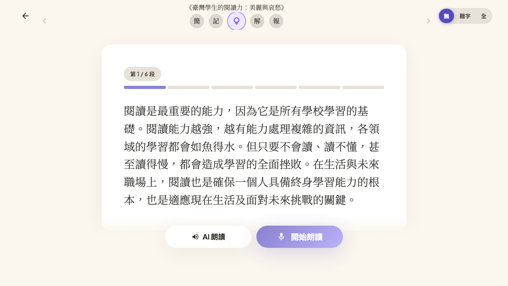

架構 / 開發 / QA / 測試集 / 缺口&債 — all in one
最後更新 2026-06-20 · base staging 6d991323（含 #2299 後送修正）· 規則：每格現況掛可點證明；無證明標 未驗證

關鍵：LLM 只在②辨識；③④全確定性（分數穩定可稽核）。儲存在④之後（後送）——舊版把儲存放在 transcribe（評分前），#2299 已改正。
| 階段 | 端 | 功能 / 檔案 | PR / 證明 | 狀態 |
|---|---|---|---|---|
| ① 錄音 | 前端 | MediaRecorder→webm useAudioRecorder.ts |
/qa render OK | ✅ |
| ② 辨識 STT | 後端·LLM | gemini-2.5-flash @us-central1 reading_transcription_service.py |
A/B doc | ✅ |
| ③ 優化+評分 | 前後 | normalize+同音校正 → deterministic DP 對齊 reading_evaluation_service.py |
#2266 #2274 · staging 98.1% | ✅ |
| ④ 顯示 | 前端 | ParagraphCard 正確率+diff useParagraphEvaluation.ts |
#2279 #2284 #2292 · /qa console 乾淨 | ✅ |
| ⑤ 儲存(後送) | 前後+GCS | 分數後 async 上傳+綁定（只存接受的 take） learning_save_audio.py |
#2278 #2283 #2286 #2299 · Backend Tests 綠 | ✅ |
| 回放 | 後端 | signed URL 10min + IDOR（學生/老師） teacher_audio_replay.py |
#2283 #2286 · 未驗證 老師端前端鈕(PR3)未建 | 部分 |
前端 前 · 後端 後 · 用 LLM LLM。「PR / 證明」欄連到 PR / CI / 文件；無證明 = 未驗證。
朗讀正確率 / STT 辨識品質的量化驗證，依賴人聲測試集（真實童音樣本）。
測試集現況：
朗讀專屬 QA 表待測試集建立樣本後對應
收集 SOP：每位貢獻者讀 3 篇×正確版+錯誤版，存至 GCS lingoleap-reading-audio prefix test-dataset/
逐段朗讀、全文朗讀實際 flow 功能（能不能跑）的驗收結果尚未做成結構化資料，此矩陣沒有涵蓋。相關驗收追蹤在 intern issues。
存放：GCS lingoleap-reading-audio prefix test-dataset/{貢獻者}/{課文}/{correct|error}.webm（不跟學生 attempt 混）。第一批靖杭/方大哥開箱。
frontend-checks 刻意只跑 src/__smoke__/，全套 npm run test 目前是紅的e2e-tests.yml 跑 staging baseURL（測舊 code 非 PR 自己的），render-smoke 才跑 PR buildreconcile_reading_audio_orphans.py 預設 dry-run、未排 cron（#2299 後送後新 orphan 應大減）每一格「現況」必須掛可點證明連結（PR / CI run / commit / 截圖）；沒證明的格子自動標 未驗證 —— 把「verified = 證據」變成看得見，擋掉「code-read 當完成」。